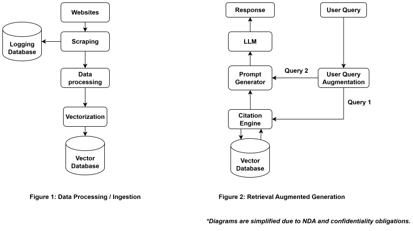
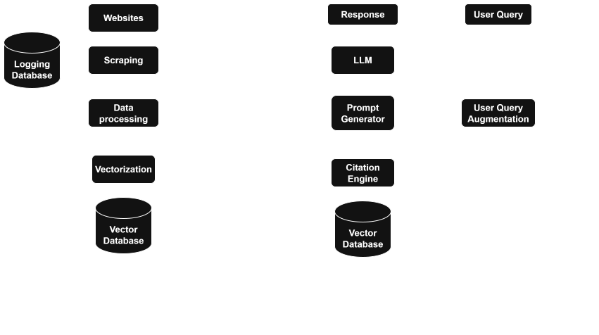

An AI-driven legal assistant that provides accurate, location-specific legal information. It leverages location-aware search and trusted legal sources to deliver clear, cited responses, and guides users to official documentation for further reference.


Python, Django, PostgreSQL, pg_vector, Supabase, Faiss (legacy), Docker, AWS EC2, AWS RDS, Langchain (legacy), langgraph (legacy)
"Details are generalized due to NDA and confidentiality obligations."